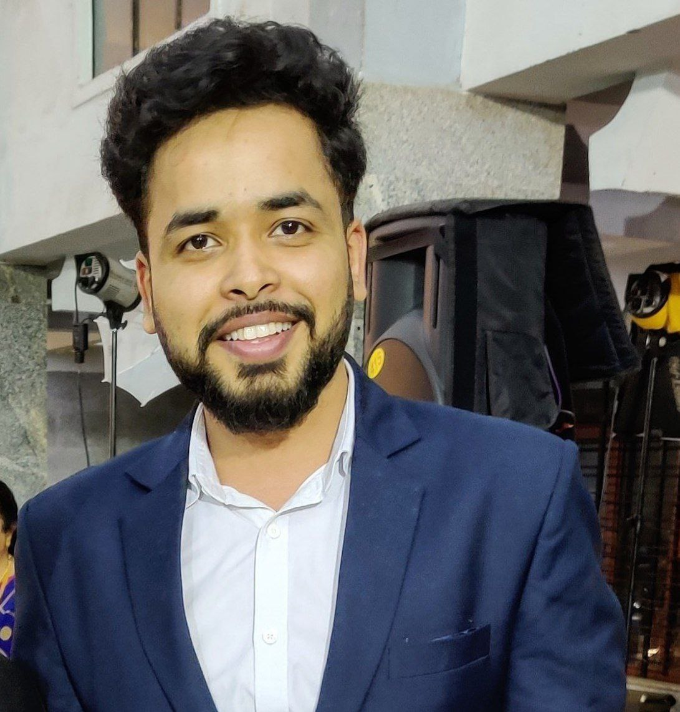

BENGALURU, KARNATAKA
+91 7488807971
RAJKAUSHALANKIT@GMAIL.COM
LinkedIn
ANKIT RAJ KAUSHAL
An aspiring Frontend Developer with 5+ years of experience in UI Development, Software Implementation & Quality Assurance,
seeking for a Frontend Development position.
Core Competencies
- Frontend Development
- Quality Assurance
- ETL and Data analysis
- Functional knowledge of Java and Python language
- End to End software tools implementation
- Good work experience on Cassandra, PostgreSQL & Dynamo DB
- Log analysis and error debugging.
- Work experience in SAML SSO configuration and testing
- Good communication skills & client handling
- Experience in handling offshore vendor and stakeholder communications
- Good team player
- Client Focused
- Agile workflow
Experience
Evive Software Analytics Pvt. Ltd., Bengaluru — Implementation Engineer III - SME
July 2022 - PRESENT
- Gathered requirements and worked on the frontend development, configuration,
implementation & testing of a multi-client product "Nearby" which used ZELIS data, zip codes and
medical provider details to help users find In-Network doctors within
their vicinity during an emergency or general routine checkups.
- Led and owned end-to-end onboarding tasks to implement the flagship
Myevive product for multiple clients not limited to but including clients
like Vf Corp, Sanofi, Sony, Southwire and FedEx.
- Worked on development & implementation of a tool called Command Center for the
clients to give them the functionality and flexibility to configure and
customise the flagship product as per their requirements.
- The tool helped reduce the complexity and time taken for the overall
implementation process and made the steps more user-friendly for any new
joiners to work on.
- Worked on migration projects which consisted of analysing & transforming
5+ years old legacy data setups of various features under the flagship
product to the new Command Center tool. This reduced complexity, and
errors and helped eliminate redundant and repetitive data/steps.
- Created enterprise-level SOPs and documents for all features under the
flagship product which helped set up guidelines on end-to-end onboarding
of a client.
- Carried out Knowledge transfer sessions for new joiners, helping them
understand every step of the process, starting from the requirement
gathering phase to the deployment and support.
Evive Software Analytics Pvt. Ltd., Bengaluru — Implementation
Engineer II
January 2021 - July 2022
- Worked closely with the client team in the US to understand the client's
business requirements and collaborate with the dev and products team
accordingly.
- Gained knowledge and work expertise on the key aspects of business, tailored around the US
insurance and employer benefits sector.
- Worked on requirement analysis, Frontend development, configuration and testing of an
enterprise-level product “Current Status” which consolidated all of the
user's medical and financial benefit accounts (for Eg. OOP, Deductibles,
FSA, HSA, 401k and more) into a one-stop benefits solution.
Evive Software Analytics Pvt. Ltd., Bengaluru — Configuration
Engineer
August 2019 - January 2021
- Worked on configuring and testing ETLs for files/data coming through
various data sources via our 40+ vendors.
- Developed and configured an indigenous tool called All Aboard to load all
features data more efficiently and quickly which helped in greatly
reducing configuration time and errors for client onboardings in
Production.
- Spearheaded migration of all existing features and related data from the
old manual setup to this new All Aboard tool by working closely with devs
and other product teams.
Evive Software Analytics Pvt. Ltd., Bengaluru — QA Developer
May 2018 - August 2019
- Configured and tested various features of the flagship product Myevive.
- Learned and used advanced tools like Selenium for the automation of
repetitive tasks such as data loading/extracting.
- Wrote test cases covering all major data dictionary values and boundary
values for testing.
- Worked on Linux commands for branch deployments and Dev testing.
- Worked on GitHub and Jenkins for deployments & Integration testing.
Education
- B.Tech in Information Science & Engineering with 8.26 CGPA in 2018 from
Siddaganga Institute of Technology, Tumkur, Karnataka.
- XII CBSE Board (77.2%) in 2014 from M.G.M. Higher Secondary School,
Bokaro
- X CBSE Board (9.2 CGPA) in 2011 from M.G.M. Higher Secondary School,
Bokaro
Awards & Recognition
- Won the EXTRA MILER Award 3 times. This award is given every quarter to
employees who exceed expectations in their work.
- Won the FEATHER IN THE CAP award 2 times - This award is given every
quarter to employees who regularly take up tasks out of their job scope
and deliver on them adding new skills to their overall skillset.
- Won second prize in Evive’s Got Talent for Duet Singing.
Others